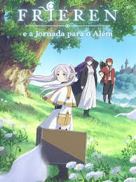
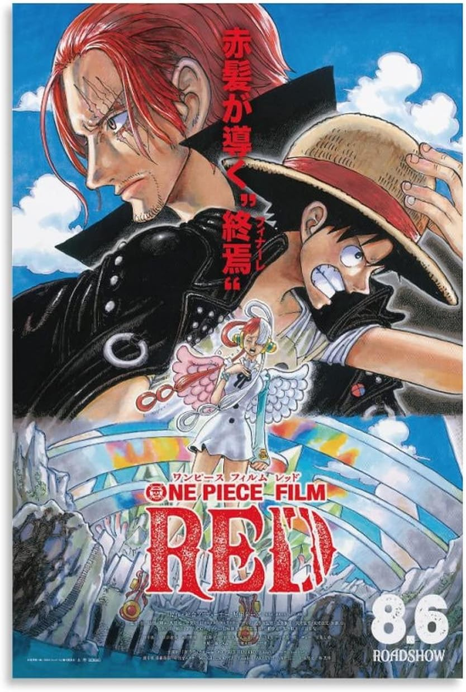
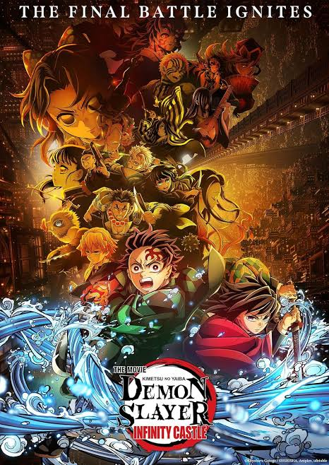

Frieren
gira em torno da elfa maga Frieren, que, após derrotar o Rei Demônio com seu grupo de heróis, parte em uma nova jornada para entender a vida e as emoções humanas

One Piece filme Red
Uta, a cantora mais popular do mundo, vai se apresentar em um palco e revelar sua aparência pela primeira vez. Luffy e seus amigos comparecem ao show e percebem que a voz de Uta é capaz de mudar tudo.

Demon slayer castelo infinito
Os Pilares agora enfrentam Muzan e decidem atacá-lo juntos. No entanto, eles são transportados para a Fortaleza Infinita antes que possam desferir um único golpe e, portanto, são separados.

Haikyu!! The Dumpster Battle
Foca na partida entre o Colégio Karasuno e o Colégio Nekoma, um confronto épico que se desenrola após o time de Hinata passar da primeira fase do Torneio de Primavera.